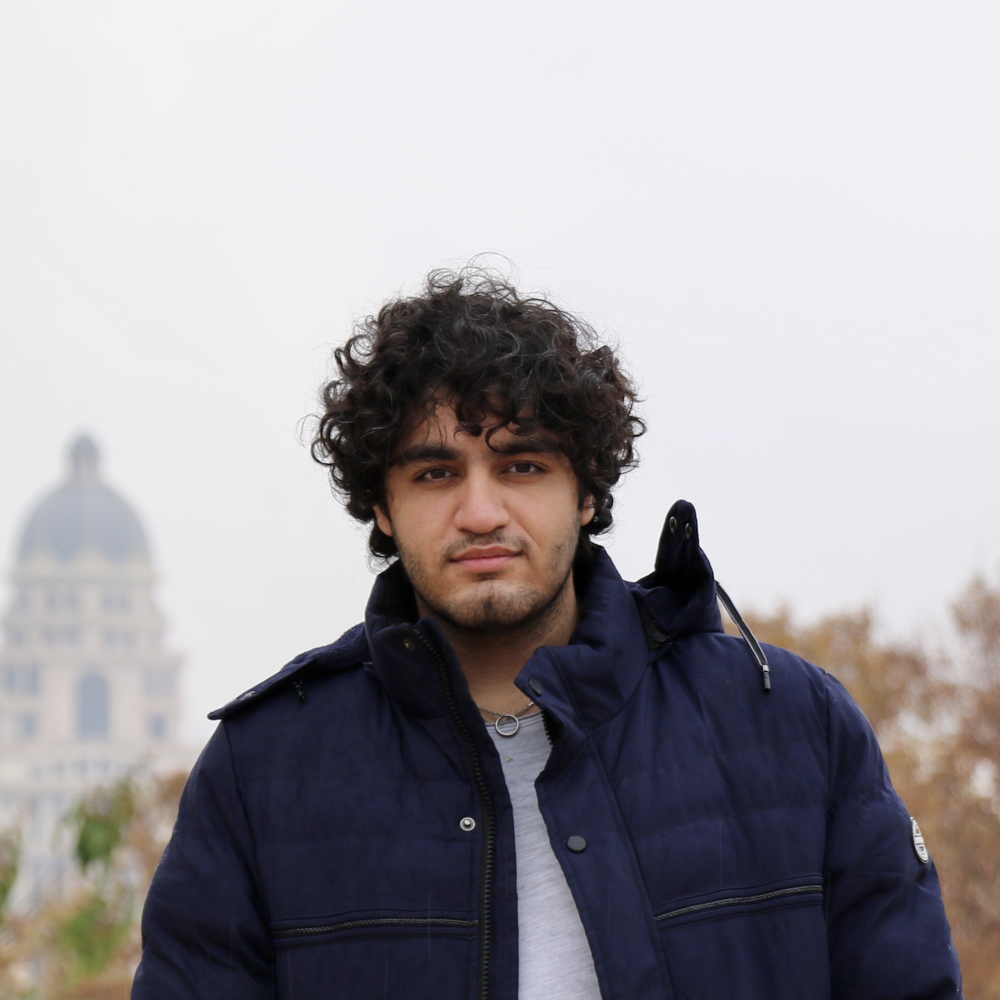

B.Sc. Computer Science student with +5 years of Algorithm programming experience includes Object-Oriented Programming(OOP), Algorithm Design and Optimization, Graph Theory, Number Theory, Problem Solving, etc using C/C++, and Python and also +1 years of Web Development experience using Django(Python web framework), DRF(RestFull API), ORM, AWS, Docker, etc.
Software Engineer at Daraya(1) and Voluntary Support at Quera College(2).
I keep going with self-confidence and try hard to improve my tech skills and soft skills, learn new things, and stay up to date, make good moments with my colleagues to finally reach the best results in our services and products.
1- Daraya (Finance Platform) is a Platform for the Several Markets Such as Stocks(Bourse) which is helping people to be in touch with professional Advisers, Monitor their selected markets and stocks; get the valuable data and a lot of other features!
2- Quera College is the Iranian leader in Task-Oriented and Interactive Online Education in Programming and Algorithmic Thinking.
See my full background on LinkedIn
Route Compass Investment in the Market World
Remotely Working in the fields of Django, Python, C/C++, Unit Test, and etc.
Scientific support at Quera College, the Iranian leader in Task-Oriented and Interactive Online Education in Programming and Algorithmic Thinking.
In Quera College I:
I’m contributing in the Data Science lab projects under the supervision of PhD. Alireza Manashty.
Affiliated with the National Organization for Development of Exceptional Talents (NODET)